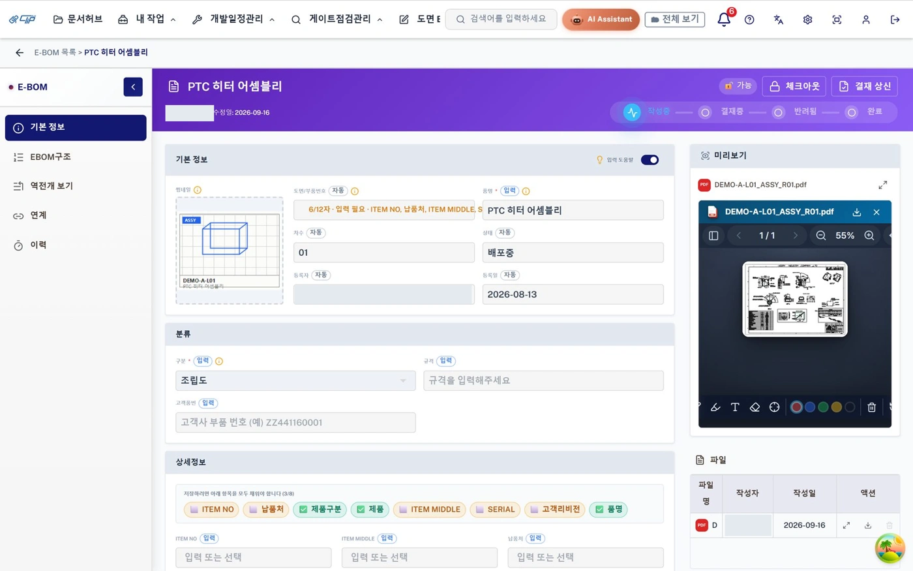
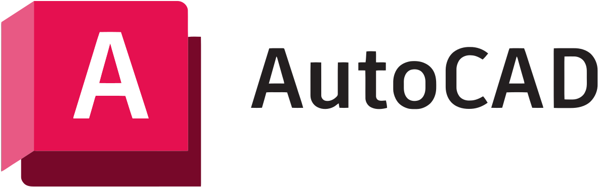
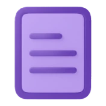
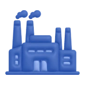

FIND & APPROVE
검색 · 승인 흐름 정리
도면 검색, 승인 대기, 변경 요청을 한 화면 흐름으로 관리해 담당자가 다음 작업을 빠르게 확인합니다.
Clip PDM은 CAD 도면·BOM·기술문서를 단일 저장소에 통합하고, 체크인/아웃·버전 관리·결재 워크플로를 하나의 플랫폼에서 제공합니다.

도면 저장·검색·버전·변경 이력을 하나로 연결
도면·부품·문서를 단일 저장소에서 관리.
체크인·체크아웃 상태와 개정 이력 확인.
조립품·부품 구조와 수량·리비전·상태 확인.
변경 사유·대상 도면·결재 이력을 연결.
담당 역할에 맞춰 자료의 열람·배포 범위를 관리.
사용 CAD에 맞춰 등록·연동 범위를 협의.
PTC 히터 어셈블리의 조립 도면과 부품 수량을 확인하세요. 설계변경 탭에서는 액추에이터의 변경 사유와 범위를 볼 수 있습니다.
PTC 히터 어셈블리의 차수는 01이고 상태는 ‘배포중’입니다. 오른쪽에 같은 조립품의 PDF 도면이 열려 있습니다.
CAD 연동과 자료 이관, 결재 규칙은 고객 환경에 맞춰 구성합니다.
현재 업무와 실제 화면을 비교하며 도입 후 달라질 점을 확인하세요
도면 검색, 승인 대기, 변경 요청을 한 화면 흐름으로 관리해 담당자가 다음 작업을 빠르게 확인합니다.
기존 CAD·ERP·MES 환경과 조직별 업무 절차를 기준으로 구축 범위와 연동 방식을 협의합니다.
ECR 제출부터 승인·배포까지 변경 이력을 남겨 누가 어떤 도면을 수정했는지 확인합니다.
구축·연동·운영 이슈를 국내 전담 인력이 고객 환경에 맞춰 지원합니다.
현재 도면·품번·엑셀 BOM을 기준으로 분류와 초기 반입 범위를 정합니다.
사용 CAD와 ERP·MES 등 연계 대상별 지원 범위와 데이터 흐름을 확인합니다.
조직과 역할, 결재선, 문서 보안 및 협력사 배포 범위를 함께 설정합니다.
사용 중인 설계 환경을 유지하면서 필요한 제품 정보를 연결합니다. 지원 여부와 추가 개발 범위는 현재 운영 환경을 기준으로 확인합니다.
SOLIDWORKS에서 신규 품목 11개를 등록한 뒤, 웹 PDM에서 조립품의 L0~L3 구조와 부품 수량을 확인합니다.

도면 및 설계 정보 연결

3D 설계 정보와 PDM 업무 연결

고객 라이선스·개발 범위 협의

고객 PDF 기준의 데이터 자동 Import
SAP·UniERP 등 고객 데이터 기준 연결

업무에 필요한 정보와 협업 범위 확인
귀사의 도면으로 최신 자료 찾기, 변경 이력 확인, 승인 업무를 살펴보세요. 현재 설계 환경에 필요한 기능과 연계 범위를 시연 상담에서 함께 확인합니다.
AutoCAD·SOLIDWORKS, PDF, 파일 서버 구성
체크인·체크아웃, 결재, ECO 변경 이력
Multi-BOM, ERP·MES 연계 범위